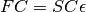
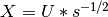
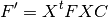
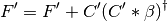
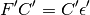
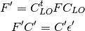
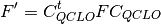

10. Fully Automatic Calculation Program QCLO¶
10.1. Introduction¶
All-electron DFT calculation of super large-scale proteins is achieved using the DFT MO calculation program ProteinDF, and the QCLO (Quasi-Canonical Localized Orbital) or RMO (Regional Molecular Orbital) semi-automatic calculation method program. The QCLO and RMO programs generate the initial guess for ProteinDF execution. Once the QCLO or RMO program is executed, ProteinDF retrieves the generated initial guess, and performs all-electron calculations following user-specified scenarios.
Warning
The current QCLO program will not be updated in the future. When a new fully automatic calculation program is completely developed, the descriptions in this manual may become outdated.
10.1.1. Semi-automatic calculation program QCLO¶
The automatic all-electron calculation program QCLO assists the calculation convergence process using the QCLO or RMO method. QCLOs or RMOs are orbitals localized in a certain unit of amino acid residue but relatively close to its canonical orbital. Extracting and combing these QCLOs or RMOs allows us to generate a good initial guess for calculating the MO of a peptide chain. From the calculation result, we obtain yet another QCLO or RMO, and again use the orbital as the initial guess for a larger peptide chain calculation. Repeating this process and gradually extending the length of the peptide chain, we achieve all-electron calculation of proteins. We call this method “Auto-convergence method for all-electron calculation of proteins”. This method allows us to easily perform accurate quantum chemical calculations on proteins with a wide range of functionalities.
10.1.2. Convergence process for all-electron calculation of proteins¶
Generally, it is difficult to obtain the electronic states of large molecules, such as proteins or peptide chains, using only a single-point calculation without any reference. We therefore first divide proteins into smaller fragments such as amino acid residues, and start calculations from the fragments. Using the results, we then further calculate larger peptide chains. The Fig. 1 shows the method overview:

Fig. 1: Convergence process for all-electron calculation of proteins
Step 1 divides a protein or peptide chain into single amino acid residues and performs calculation on each residue. Step 2 calculates a unit of three residues using the results of Step 1. From Step 2 onwards, residues are extracted with overlaps, as shown in Fig. 10.1. Using the results in Step 2 as the initial guess, Step 3 calculates peptide chains made of several residues. In this step, the initial guess is generated by combing the results of the first two residues of the peptide chain, those of all middle residues among the three-residue units, and those of the last two residues. Repeating this procedure and gradually extending the length of peptide chains, we finally obtain the total protein energy. We call the molecules generated during this process frame molecules. Step 1 uses Harris’s guess for computation, and Step 2 generates the initial guess by combining electron densities derived in Step 1. In this approach, the more frame molecules are combined, the more errors accumulate. Furthermore, relatively large errors may occur at combing sites, although residues are extracted with overlaps. These errors may cause a critical problem especially during large molecule calculation. Step 3 onwards, therefore, uses a different method based on localized orbitals to generate the initial guess.
10.1.3. Canonical orbitals and localized orbitals¶
The expression of molecular orbitals allows a degree of freedom, and can be transformed into many forms using unitary transformations. The following two expressions are typically used: canonical orbitals and localized orbitals. Localized orbitals are the orbitals obtained based on the assumption of their maximum concentration within a minimum space. To judge localization, the criteria proposed by Edmiston and Rüdenberg, as well as those by Foster and Boys, are well known. There are other methods, such as the Population method of Pipek and Mezey, and the RMO method of Gu. In any method, the more orbitals are localized into a specific region, the greater the index value. Chemists find intuitive the Edmiston-Rüdenberg, Population, and RMO methods, since in localized orbitals obtained by these method indices, core electrons are localized around a nucleus, bonding valence electrons are around the bond, and non-bonding valence electrons are found as lone-pair orbitals
ProteinDF employs the Population method and RMO method, which allow faster computation than the Edmiston-Rüdenberg method. To generate a good guess for peptide chain computation, from Step 3 onwards we use a method based on localized orbitals, as mentioned above. When MOs are expressed in a localized state, they can be separated into individual orbitals with chemically reasonable approximation. Once orbitals are localized through an intricate procedure, they can be separated and combined safely and freely, and an initial guess of good accuracy can be obtained. We named this orbital Quasi-Canonical Localized Orbital (QCLO) after its properties. The RMO method of localizing orbitals into a specific region basically has a similar handling procedure, although based on a different calculation system. In general, the larger the molecular size, the faster the computation of the RMO method compared with that of the QCLO. As shown in Fig. 2, These methods generate initial guesses by 1) dividing a peptide chain into fragments, such as amino residue side chains and peptide bonds; 2) obtaining an orbital which spreads only over each fragment and is also similar to the fragment’s canonical orbital; and 3) combining all the fragment orbitals to obtain an initial guess for calculating the MO of the entire peptide chain. For orbital localization, we start calculation from the frame molecules with three or more residues, in order to include the effect of the target molecule surroundings, and to express peptide bonds in a strict manner. Note that when calculating frame molecules of peptide chains, the user is required to group them into main chains and side chains. This grouping allows the system to automatically divide the target molecule into fragments.
{kind=link}
Fig. 2: Frame molecule THR-VAL-GLU and the fragments
The procedure for generating QCLOs and RMOs is as follows:
Step 1: Molecular orbital calculations for each frame molecule
Perform the molecular orbital calculation of each frame molecule. For the structure of the frame molecule, use the corresponding part of the original peptide chain. Add H and OH to the N-terminal and C-terminal at the split points, respectively. The orbital obtained here is a canonical orbital which spreads over the frame molecule.
Step 2: Localized orbital calculations for each frame molecule
Transform the molecular orbitals obtained in Step 1 to those localized on individual chemical bonds or lone pairs. The calculation procedure varies between QCLOs and RMOs.
Step 3: QCLO calculations for each fragment
From the orbitals obtained in Step 2, pick up an orbital which belongs to each fragment. Using the coefficient matrix, change the Kohn-Sham matrix (Fock matrices for ab initio HF) of the frame molecule from atomic orbital basis to localized orbital basis. By solving the eigenvalue equation of the Kohn-Sham matrix of the fragment, we can obtain an orbital, which is localized at the fragment but also spreads over the entire fragment. Repeat Steps 1 to 3 for all the frame molecules and fragments to obtain their QCLOs or RMOs. Then Step 4 generates the initial guess.
Step 4: Combing localized orbitals
The QCLOs and RMOs obtained in Step 3 are calculated based on the unit of the frame molecule. It is therefore necessary to remove the orbital components of H and OH, which were added in Step 1, since they do not exist in the actual peptides. Then combine QCLOs or RMOs of all fragments to generate an orbital set of the entire peptide chain. Next, apply a Löwdin orthogonalization to the orbital set. Here, we can obtain orbitals almost identical to those in Step 3, since the Löwdin method achieves orthogonalization with the original state hardly changed. Through these processes, we can thus obtain an orthogonalized LCAO matrix over the entire peptide chain.
We call the method consisting of Steps 1 to 4 the convergence process for all-electron calculation of proteins.
10.1.3.1. Automatic calculation function based on the QCLO method¶
This function is based on the QCLO method which eliminates redundant calculations. This function generates the initial data (LCAO) for ProteinDF, using each fragment’s QCLO result obtained in ProteinDF.
ProteinDF solves the Roothaan equation  by transforming it to an orthogonal basis using the matrix .
Transforming the atomic orbital (AO) based KS matrix to the orthogonal basis KS matrix.

Performing level shift to the KS matrix

Diagonalizing the KS matrix to obtain the coefficient matrix in orthogonal basis

Transforming the coefficient matrix to the AO basis
The following generally describes the QCLO method calculation procedure:
1st step:
Perform normal SCF MO calculations on all amino acids. Generate the initial guess from the atomic electron density.
2nd step:
Obtain initial guess by extracting and combining the monomer electron densities obtained in the 1st step. Pick up the localized orbitals (LO) and assign them to fragments. The QCLOs of the fragments can be obtained by solving the following eigen equations:

 represents the Fock or Kohn-Sham matrix of the frame molecule,
represents the Fock or Kohn-Sham matrix of the frame molecule,3rd step onwards:
Generate an initial guess by combining the QCLOs in the 2nd step. Then apply the Löwdin’s orthogonalization to the combined QCLOs. The transformed QCLO is hardly changed from the original orbital. Obtain the initial guess for each fragment from the orthogonalized QCLO. We can obtain the Fock or Kohn-Sham matrix of the fragment by the following equation:

Note that the solution of this equation expresses the QCLO of the 3rd step within the space defined by the QCLO of the previous step. Fig. 3 shows the processing flow of the QCLO method:
Fig. 3: The QCLO method processing flow
10.2. Execution procedure¶
10.2.1. Preparing input data for the QCLO method program¶
Specify the input keywords for the semi-automatic calculation program in the input file QcStep. The following shows an example of the QcStep file:
// Qclo input file
>>>>CONTROL
step-selection = { 1 2 3 4 }
filename = 1hrc_amber.nowat.pdb
>>>>STEP1
execution = {creation integral guess pdf }
sequential-frames = {
18-24|1
}
>>>>STEP2
execution = {creation integral guessrho pdf lo pickup}
sequential-frames = {
18-24|3
}
>>>>STEP3
execution = {creation integral guessqclo pdf lo pickup}
sequential-frames = {
18-22
21-24
}
>>>>STEP4
execution = {creation integral guessqclo pdf }
sequential-frames = {
18-24
}
pdf-keywords = {
max-iteration = 5
｝
>>>>GLOBAL
pdf-keywords = {
scf-acceleration = damping
scf-acceleration/damping/damping-factor = 0.90
｝
In QcStep files, specify the keywords in a block defined with >>>>. There are three blocks: CONTROL, STEP#, and GLOBAL. The # signifies step numbers. The text beginning with // up to the line feed code is commented out
10.2.2. Executing the QCLO method program¶
To execute the QCLO auto-calculation method program from the command line, specify the command as follows:
% $PDF_HOME/bin/QCLO.x
10.3. Keywords for the auto-calculation method program¶
10.3.1. CONTROL block¶
The CONTROL block specifies the keywords regarding the auto-calculation method in general.
10.3.1.1. step-selection¶
Controls the steps for the auto-calculation method. In the brace { }, the user can specify the number (#) in the STEP# block keyword described in the same file.
10.3.1.1.1. Default¶
Step number specified in the STEP block
10.3.1.1.2. Values¶
{ (Step number at which to perform calculation) }
10.3.1.1.3. Example¶
step-selection = { 1 2 3 4 }
10.3.2. STEP block¶
STEP block specifies the keywords regarding each calculation step.
10.3.2.1. sequential-frames¶
Defines peptide-chain frames on which to perform the calculation sequence, as in sequential-frames ={ }. The description format in the brace { } is as follows:
- $1-$2|$3
Divides the peptide chain consisting of the residues from $1 to $2 into groups of $3 residues, allowing overlaps of two residues. The number of residues constituting the end fragment can be other than $3.
- $4
Amino acid residue with the number $4
- $5-$6
Peptide chain made of the residue number $5 to $6 (equivalent to $1-$2|$3 above when $3 is omitted)
10.3.2.1.1. Default¶
None
10.3.2.1.2. Values¶
Numbers of residues which construct peptide chain frames
10.3.2.1.3. Example¶
sequential-frames = {
18-24|3
}
10.3.2.2. general-frames¶
Defines general frame molecules on which to perform the calculation sequence, as in the following format:
general-frames = {
name : {
…
}
}
Any string except system-reserved names can be specified for name. In the brace { }, the values specified for sequential-frames keyword can be specified.
10.3.2.2.1. Default¶
None
10.3.2.2.2. Example¶
general-frames = {
H2O : {
{
}
}
}
10.3.2.3. execution¶
Controls the executions for the current STEP#. The following strings can be specified in the brace { }:
- creation
Creates work environment.
- integral
Executes integrals on ProteinDF.
- guess
Generates initial guess in ProteinDF.
- guessrho
Generates initial guess with p~bonds.
- guessdensity
Generates initial guess by combining density matrices
- guessqclo
Generates initial guess with QCLOs (available in Step 3 onwards)
- guessfile
Uses the initial data file specified with qclo-keywords.
ProteinDF calculation
- lo
Calculation for orbital localization
- pickup
Picks up localized orbitals to assign to fragments.
- pdfqclo
Molecular orbital calculation with the extended QCLO method
10.3.2.3.1. Default¶
Step1: execution = {creation integral guess pdf }
Step2: execution = {creation integral guessrho pdf lo pickup }
Step3 onwards: execution = { creation integral guessqclo pdf lo pickup }
10.3.2.3.2. Values¶
creation,integral, guess, guessrho, guessqclo, guessfile, lo, pickup, pdf, pdfqclo
10.3.2.3.3. Example¶
execution = { creation integral guess pdf }
execution = { creation integral guessrho pdf lo pickup }
execution = { creation integral guessqclo pdf lo pickup }
The example above shows the default values of STEP1, STEP2, and STEP#(#>2).
10.3.3. GLOBAL block¶
The keywords described in this block are reflected in all blocks. In the current system, the user can describe the following keywords pdf-keywords and qclo-keywords:
10.3.4. Other keywords¶
10.3.4.1. pdf-keywords¶
Specifies the ProteinDF keywords. These keywords will be only valid for the ProteinDF calculations within the block where the pdf-keywords is described. Use the following format:
pdf-keywords = {
ProteinDFプログラムの入力キーワード群
}
These keywords can be described anywhere in the auto-calculation method input file. The priority and effective range for the keywords are as follows:
{}内 > {}外 > STEP#ブロック > GLOBALブロック > CONTROLブロック
10.3.4.1.1. Default¶
None
10.3.4.1.2. Values¶
ProteinDF program input keyword
10.3.4.1.3. Example¶
pdf-keywords = {
max-iteration = 5
}
10.3.4.2. qclo-keywords¶
Specifies the keywords for the QCLO auto-calculation method program. These keywords will be only valid for automatic calculations within the block where the qclo-keywords is described. Use the following format:
qclo-keywords = {
自動計算法プログラムの入力キーワード群
}
These keywords can be described anywhere in the auto-calculation method input file. The priority and effective range for the keywords are as follows:
{}内 > {}外 > STEP#ブロック > GLOBALブロック > CONTROLブロック
10.3.4.2.1. Default¶
None
10.3.4.2.2. Values¶
Keywords for the auto-calculation method program
10.3.4.2.3. Example¶
qclo-keywords = {
set_fragment_by_element
}
10.3.4.3. fragment¶
Specifies fragment divisions for generating frame-molecule QCLOs in the following format:
fragment = {
フラグメント１の名前 = {
フラグメント１の構成要素１
...
フラグメント１の構成要素ｍ
}
...
フラグメントｎの名前 = {
...
}
}
Describe the above specification in the frame molecule definitions.
10.3.4.3.1. Default¶
None
10.3.4.3.2. Example¶
fragment = {
frag_res18 = {
18
}
frag_res19_21 = {
19-21
}
frag_res22 = {
22
}
｝
10.3.5. Calculation conditions specified with qclo-keywords¶
10.3.5.1. add_ethyl¶
Adds ethyl group to frame molecules. The coordinate of the specified residue side chain is used for the ethyl group coordinate.
10.3.5.1.1. Default¶
None
10.3.5.1.2. Values¶
Residue number
10.3.5.1.3. Example¶
add_ethyl = 18
10.3.5.2. set_fragment_add_ethyl¶
Regarding a frame molecule as a part of the specified amino acid residue, extracts the part corresponding to the side chain to generate an R side fragment.
10.3.5.2.1. Default¶
None
10.3.5.2.2. Values¶
Residue number
10.3.5.2.3. Example¶
set_fragment_add_ethyl = 18
10.3.5.3. no_add_terminal¶
Prohibits adding H or OH to the breaking points of peptide bonds.
10.3.5.3.1. Default¶
None
10.3.5.3.2. Values¶
None
10.3.5.3.3. Example¶
no_add_terminal
10.3.5.4. set_fragment_by_element¶
Creates the fragments for QCLO generation in the same way as when generating an initial guess.
10.3.5.4.1. Default¶
None
10.3.5.4.2. Values¶
None
10.3.5.4.3. Example¶
set_fragment_by_element
10.3.5.5. localize_unocc_orbital¶
Includes unoccupied orbitals in localizing process during QCLO generation.
10.3.5.5.1. Default¶
None
10.3.5.5.2. Values¶
None
10.3.5.5.3. Example¶
localize_unocc_orbital
10.3.5.6. pickup_unocc_orbital¶
Includes unoccupied orbitals in the process assigning LOs to fragments.
10.3.5.6.1. Default¶
None
10.3.5.6.2. Values¶
None
10.3.5.6.3. Example¶
pickup_unocc_orbital
10.3.5.7. guessqclo_combine_unocc_orbital¶
Includes unoccupied orbitals when generating initial guess from QCLOs.
10.3.5.7.1. Default¶
None
10.3.5.7.2. Values¶
None
10.3.5.7.3. Example¶
guessqclo_combine_unocc_orbita
10.3.5.8. initial-guess-lcao-file¶
Specifies the initial data file of LCAO expansion coefficient matrix for RKS calculations.
10.3.5.8.1. Default¶
None
10.3.5.8.2. Values¶
File name
10.3.5.8.3. Example¶
initial-guess-lcao-file = step3/13_19/result.guess.lcao.rks
10.3.5.9. initial-guess-lcao-alpha-file¶
Specifies the initial data file of LCAO expansion coefficient matrix for α orbitals in UKS calculations.
10.3.5.9.1. Default¶
None
10.3.5.9.2. Values¶
File name
10.3.5.9.3. Example¶
initial-guess-lcao-alpha-file = step3/13_19/result.guess.lcao.uks-alpha
10.3.5.10. initial-guess-lcao-beta-file¶
Specifies the initial data file of LCAO expansion coefficient matrix for β orbitals in UKS calculations.
10.3.5.10.1. Default¶
None
10.3.5.10.2. Values¶
File name
10.3.5.10.3. Example¶
initial-guess-lcao-beta-file = step3/13_19/result.guess.lcao.uks-beta
10.3.5.11. initial-guess-occ-file¶
Specifies the initial data file of occupation number for RKS calculations.
10.3.5.11.1. Default¶
None
10.3.5.11.2. Values¶
File name
10.3.5.11.3. Example¶
initial-guess-occ-file = step3/13_19/result.guess.occ.rks
10.3.5.12. initial-guess-occ-alpha-file¶
Specifies the initial data file of α electron occupation number for UKS calculations.
10.3.5.12.1. Default¶
None
10.3.5.12.2. Values¶
File name
10.3.5.12.3. Example¶
initial-guess-occ-alpha-file = step3/13_19/result.guess.occ.uks-alpha
10.3.5.13. initial-guess-occ-beta-file¶
Specifies the initial data file of β electron occupation number for UKS calculations.
10.3.5.13.1. Default¶
None
10.3.5.13.2. Values¶
File name
10.3.5.13.3. Example¶
initial-guess-occ-beta-file = step3/13_19/result.guess.occ.uks-beta